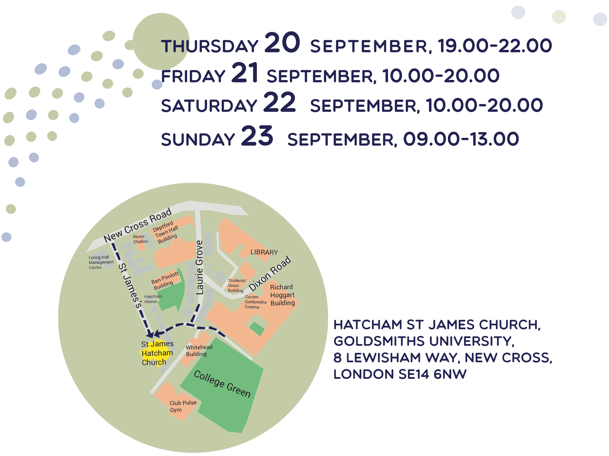

  <div id="clients" class="bg-light-gray">
  <div class="container">

      <div class="row">
         <h2 class="section-heading">Playful Experiences 2018 Conference</h2>
         
         <h5>Opening Night - Thursday Sept 20th, 6pm - 10pm.</h5>
      </div>
  <div class="row">
    <h3>Keynote Speakers</h3>
    <p>This talk series will run from 7:00 until 8:30pm</p>
  </div>
      <div class="row">
      <div class="col-md-6">
<!--          <span class="fa-stack fa-6x"> </span> -->
      <h4>Phoenix Perry : New Visions </h4>
      <p>How can games change culture? This talk explores the importance of establishing creators willing to engage cultural narratives using play and games. It highlights the important work done this year by students participating in this course.</p>
      <p>Phoenix Perry creates physical games and embodied experiences. Her work looks for opportunities to bring people together to raise awareness of our collective interconnectivity. Current research underway at Goldsmiths, University of London looks at leveraging our other senses, with particular focus on sound and skin based feedback to trigger affective response. A consummate advocate for women in game development, she founded Code Liberation Foundation. In her role at Goldsmiths, University of London, she leads an MA in Independent Games and Experience Design which she created.</p> </div>

      <div class="col-md-6">
      <h4>Cara Ellison : Environmental Storytelling</h4>
      <p>I design stories for video games. Some people think this means I'm the person who writes the line, Oh my god we've got to get out of here! Some studios still believe that this is all I should do: "Isn't that what scriptwriters do? They write what characters say." But "narrative designers" have a broader remit. </p>

      <p> Cara Ellison is a narrative designer for videogames and often writes for TV and comics.</p>

      <p>She is originally from Aberdeen, Scotland, lives in Edinburgh, and works in & out of office for many game studios worldwide. Previously an itinerant journalist, she has also written books and worked in radio. She is the second most prominent defender of Britney Spears in the games industry.</p>

    </div>
    </div>
  <div class="row">
  <div class="col-md-6">
      <h4> Robin Baumgarten : Making Strange Hardware Games</h4>
      <p>Robin will explore the thriving experimental hardware game scene with its weird contraptions, strange arcade machines, and new controllers that push the boundaries of what games can be. He’ll talk about his own journey with the critically acclaimed Line Wobbler from door stopper spring experiment to museum exhibitions.</p>

      <p>Robin Baumgarten is an Independent Hardware Game Designer based in London. Coming from an Artificial Intelligence and commercial game development background, he is now building award-winning interactive installation art and experimental custom controller games. He's also a keen game jammer, wannabe nomadic and photographer. </p>
    </div>
    <div class="col-md-6">
      <h4> Federico Fasce: Games as a language</h4>
      <p>By looking into how language can influence a culture and how some games influence the life of small communities this talk will encourage a more adventurous exploration of games as a language and a more diverse use of verbs.</p>
      <p> Born in Genova in 1975 Federico has worked in and out the game industry since 1996. He sees himself as a game designer, though lately is questioning what games even mean, and he all in all doesn’t really care as long as people keep making cool things. He has also been an event organiser, a teacher and a mentor. He’s a strong advocate of personal games and he firmly believes that getting more people making games is the way to save the industry and push the form of expression forward. He now lives in London where he explores self caring and relationship in game spaces. He recently worked at The Guardian as a creative technologist for virtual reality experiences. He’s constantly excited about something. Even before morning coffee. </p>
    </div>
  </div>
    <div class = "row">
        <h3>Student Final Thesis Presentations</h3>
        <h5>Friday Sept 21st, 10:30AM - 4:30PM.</h5>
        <p>Students in this MA in the 2017-2018 cohort will be presenting their thesis work all day on Friday the 21st within their exhibitions. Everyone is welcome, campus wide to come and learn about their work and see the process behind their project's creation.</p>
      </div>
    <div class="row">
        <table class="table table-hover">
          <tr>
            <td>Name</td>
            <td>Project</td>
            <td>Time</td>
          </tr>
          <tr>
            <td class="word-wrap">Raymond Vermeulen</td>
              <td>With Feeling!<br>
              An Analysis of the DDE framework through Tabletop Role-Playing-Game Design</td>
            <td>10:30AM</td>
          </tr>
          <tr>
            <td class="word-wrap">Jade Hall Smith</td>
              <td>Natural Tone<br>
              Breaking Barriers: How Natural Tone Creates Empathy and Awareness Through Narrative Gameplay</td>
            <td>11:00AM</td>
          </tr>
          <tr>
            <td class="word-wrap">Guest: Hannes Flor</td>
              <td>Natural Tone<br>
              Designing for Impact</td>
            <td>11:30AM</td>
          </tr>
          <tr>

            <td>Alex Fletcher</td>
              <td class="word-wrap">Soli<br>
              Mental State Recognition via Personal EEG as a Game Controller for Audio-Visual Applications </td>
            <td>12:00PM</td>
          </tr>
          <tr>
            <td>Ece Seyrek Hasdoğan</td>
              <td class="word-wrap">Chronofold<br>
              A time bending puzzle game where reality is not what it seems.</td>
            <td>1:30PM</td>
          </tr>
          <tr>
            <td>Doruk Hasdoğan</td>
              <td class="word-wrap">Chronofold<br>
              A time bending puzzle game where reality is not what it seems.</td>
            <td>2:00PM</td>
          </tr>
          <tr>
            <td>Billy Karnchanapee</td>
              <td class="word-wrap">Chronofold<br>
              Puzzle Games and the Facilitation of Intrinsic Motivation in Different Personality Types.</td>
            <td>2:30PM</td>
          </tr>
          <tr>
            <td>Tommy Graven</td>
              <td class="word-wrap">Slippery Slope<br>
            Player Motivation in Hyper-Casual Games</td>
            <td>3:00PM</td>
          </tr>
          <tr>
            <td>Hugh Kennedy</td>
              <td class="word-wrap">Evolyte<br>
              Critiquing the Political Economy of Cryptocurrencies Through Play</td>
            <td>3:30PM</td>
          </tr>
          <tr>
            <td>Matthew Deline</td>
              <td class="word-wrap">Campfire Tales<br>
              Augmenting Modern Oral Traditions Through Performance and Procedural Generation.</td>
            <td>4:00PM</td>
          </tr>


        </table>
      </div>
  </div>
</div>
